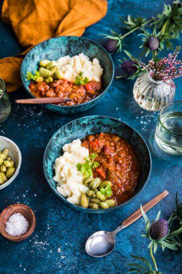

Högrevschili med pumpa
För: 8 personer
- 1 kg högrev
- 2 gula lökar
- 3 stjälkar blekselleri
- 4 vitlöksklyftor (hacka)
- 1 grön paprika
- 1 röd paprika
- 350g pumpa
- 2–3 röda chilifrukter (beroende på hur hett man gillar)
- 1 tetra/burk kokta kidneybönor (400g)
- 500g krossade tomater
- 2 msk mörkt muscovadosocker
- 3 msk tomatpuré
- 2 dl vatten
- 2 krm rökt paprikapulver
- 2 krm ancho chilipulver
- salt, peppar

- Ansa högreven från hinnor och segt fett och skär den till lagom munsbitar. Smält smör i en stekpanna och och bryn köttet runt om. Bryn hellre i omgångar än att fylla hela pannan på en gång. Salta och peppra under stekningen. Lägg över köttet i grytan.
- Skala och hacka löken. Tärna bleksellerin. Skala och finhacka vitlöken. Kärna ur och skär paprikan till bitar. Smält smör i stekpannan och lägg i lök, selleri, vitlök och paprika. Stek tills det mjuknat. Salta ett varv och lägg över i grytan.
- Skala, kärna ur och tärna pumpan i centimeterstora bitar. Hacka chili. Skölj av bönorna genom ett durkslag. Lägg i pumpa, chili, bönor, krossade tomater, muscovadosocker och tomatpuré i grytan. Skölj ur förpackningen till de krossade tomaterna med vattnet och häll ner i grytan. Pudra över rökt paprikapulver och ancho chilipulver. Salta och peppra och blanda allt.
- Sätt på locket, starta tryckkokaren på högsta trycket och låt den gå i 1,5 timme. Kokar du i vanlig gryta på spisen, låt den sjuda i 3 timmar.
- Servera med potatismos och inlagd gurka eller med ris, crème fraiche och tortillabröd..